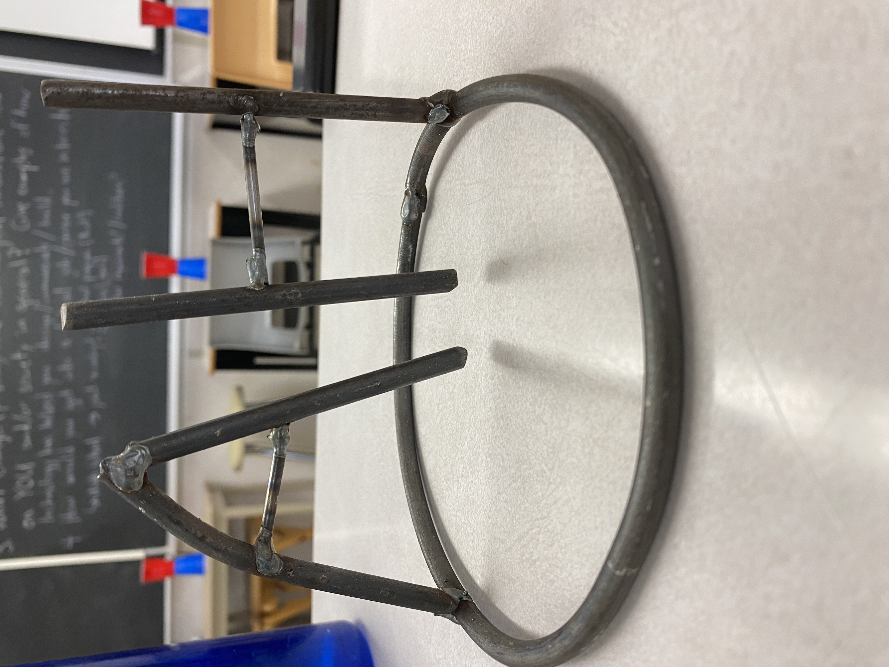
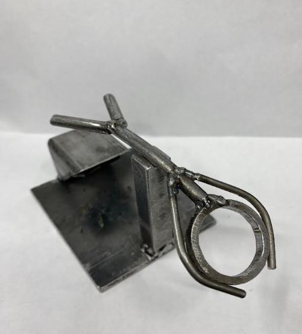
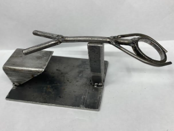
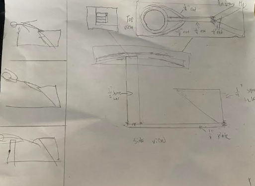
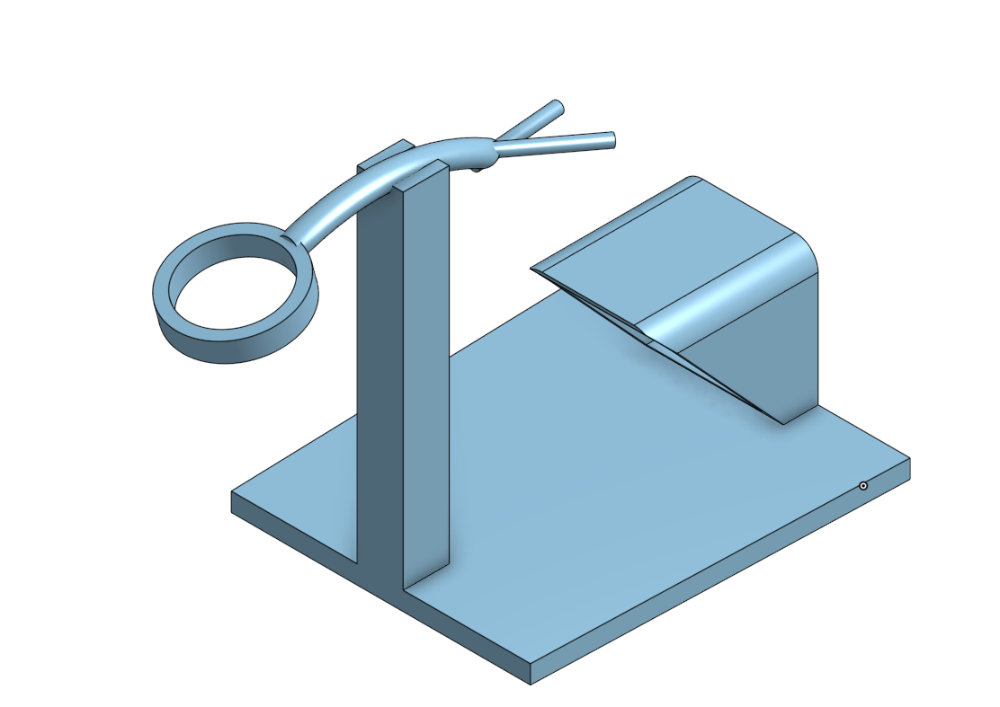

Metalwork
This page is an overwiew of the metalwork I did throughout the course
The Initials
The Initials is the first metalworking project that I did in the metal shop.
Materials
- The initals are made out of 1/4 inch and 1/8 inch steel rods from the metal rack.
- I tried to only use materials from the rack, as they are from different projects and it's good to reuse.
- I picked pieces that had minimal rust on it, so they would be easy to weld
Making the initials
- First, I had to make the base using bench tools, which I welded to make a perfect circle
- I then created the letters one piece at a time by carefully cutting and shaping them with various bench tools then welding them together
- Finally, I welded everything together and filed everything down.
The ironman
The ironman is the big metalworking project that we worked on in tech class using many machines in the metal shop
 Making the ironman
Making the ironman different as this was the first project where I could choose exactly what I wanted to do and what to use for it.
- I first brainstormed with 3 thumbnail drawings and eventually selected one that I liked
- Then, I started selecting materials, I chose to try and only use items from the rack and not use new rods from the back of the shop to which is better for the enviroment.
I chose a random plate, a square pipe cut into a triangular shape, a square metal beam and quarter/eigth inch rods for my materials.
I started by welding my square pipe piece onto my base with two litte welds, then a long one. This would act as my diving block
Next, I filed and welded my square beam onto the base, but I filled the top with a round file so that there would be an indent for the body
I then created my body with a cut from the round pipe, and a few quarter and eighth inch steel rods.
Finally, I welded the whole body together, figured out the balance on the base, and filed everything down.
CAD
After I was done making my real irnoman, I CADded it on onshape which
